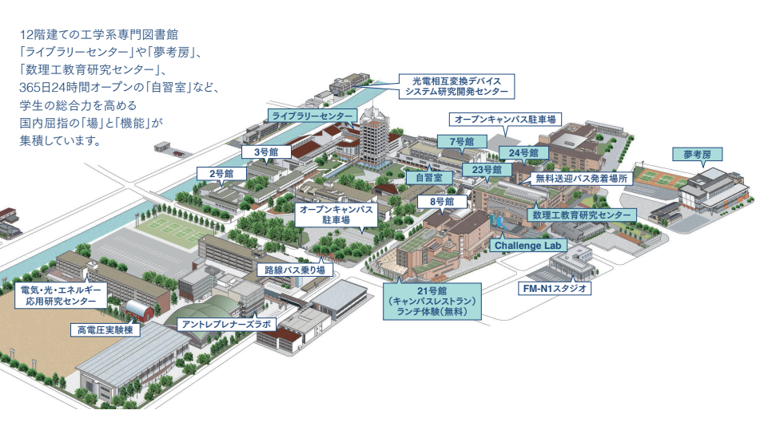

KIESオープンキャンパス情報サイト
KIESプロジェクトによるオープンキャンパス情報サイト
タイムテーブル
教室の場所
学校マップ
タイムスケジュール
時間
教室
10:30 ～ 12:00
オリエンテーション
13:00 ～ 14:30
各学科体験授業
学科別教室場所
工学部
学科名
教室場所
機械工学科
教室:24.112
航空システム工学科
教室:23.112
ロボティクス工学科
教室:23.102
電気電子工学科
教室:7.202
情報工学科
教室:7.203
環境土木工学科
教室:7.115
情報フロンティア学部
メディア情報工学科
教室:7.204
経営情報工学科
教室:7.303
心理科学科
教室:7.305
建築学部
建築学科
教室:23.211
>i
教室場所
号館選択
2号館
3号館
7号館
8号館
21号館
23号館
24号館
challenge Lab
41号館 夢工房
